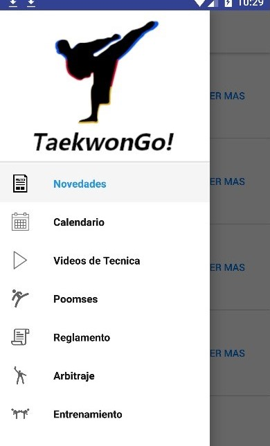

Si deslizamos el dedo por la parte izquierda de la pantalla hacia la derecha, o tocamos el icono que son 3 líneas rectas paralelas en la esquina superior izquierda de cada pantalla, podremos ver un menú en el que aparecen todas las pantallas de la aplicación.
